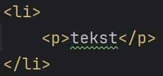

card.png (100%)

card.png (40%)
Besluit: er is zichtbaar verlies in kwaliteit. De textuur van de kaart is veranderd na compressie naar 40%.
tekst.jpg (100%)

tekst.jpg (40%)
Besluit: er is zichtbaar verlies in kwaliteit. Zowel textuur als kleuren zijn veranderd na compressie naar 40%.